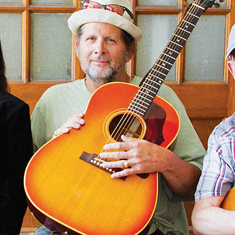

A farewell to Steve Pryor
December 27, 1955 - May 6, 2016

Phil Clarkin
The foundation of Tulsa’s music scene was shaken on Friday, May 6, when our cornerstone, Steve Pryor, died after being involved in an accident on his motorcycle.
For those not familiar with Steve Pryor or his work, my apologies. We lost one of the greats.
Born and raised in Tulsa, OK, Steve Pryor was an immensely gifted musician who cut his teeth playing the Tulsa scene. From his first band in high school, Light Year, with Jimmy Strader on bass, Damon Daniel on drums and Mark Carpenter on guitar (one of Steve’s first six-string influences), to lessons and jams with the legendary guitarist Mike “Monk” Bruce and sit-ins with local legends like Jimmy Markham and Carl Radle at The Colony in the early 70s, Pryor was Tulsa, through and through.
After tearing up the local and regional scene through the late 70s and early 80s, Steve caught a big break in ‘89 when he moved to LA and landed a record deal. He experienced a few years of rock-n-roll success, touring with the Fabulous Thunderbirds and opening for Joe Cocker, among other highlights.
By 1992 he found himself back in Tulsa. Although he’d shared the stage with the likes of John Lee Hooker, Albert King, Buddy Guy, B.B. King, Greg Allman, and Dr. John, Steve never got another shot at the big time.
I point this out because it’s often the “elephant in the room” when talking with people about Steve Pryor. It goes like this: “Steve’s one of the greatest guitarists I’ve ever heard!” Then, almost in a whisper, “It’s really too bad he never made it...” This is usually followed by speculation about his personal demons or a surface-level discussion of the recording industry’s paradigm shift in the early 1990s.

Now that Steve is gone, I’m inclined to set the record straight and remember Steve Pryor the musician for what he was, not what he wasn’t, because Steve Pryor was the greatest guitar player I’ve ever heard. But before we get into that, let’s acknowledge something else: Steve was one of the funniest damn dudes on the planet. If you knew him for more than two minutes he made you laugh. Sometimes it was a joke, or a story (man, he could tell stories), or just some funny situation. Sometimes it was all three rolled up in a big ball.
One early evening, Brian Fontaine and I were having a casual conversation at The Colony when Pryor burst through the door with this wild look on his face. Nobody else was in the entire bar.
“What’s up, Steve?” Fontaine asked.
Standing wide-eyed in the middle of the empty room, Steve launched into a ten-minute story about how he had just been at home watching the blues channel when he realized it was past 10 o’clock (downbeat for his show that night). Thinking he was late for the gig, he freaked out, frantically grabbed his shit and ran down to the Colony, only to burst in and realize... it’s 8:30? Evidently he saw the blues channel cable number on TV and mistook it for the time.
Which is where the story gets good. He then launched into the most hilariously self-deprecating diatribe I’ve ever heard. Something about how stupid he is (he was never cocky) and how there is a special place in hell for him filled with a thousand electric guitar players playing nothing but Journey in unison for eternity at insanely high volumes while some girl behind a grill offers him “fake bacon” saying “try it, Steve, it tastes just like real bacon.”
There was more, but I was laughing so hard I didn’t catch the rest. If you knew Steve, you’ve got a lot of stories like this.
I guess that’s one of the reasons Steve’s playing was so disarming. He never acted like he was a rock star. Not in terms of ego, anyway. He was truly a kind and humble spirit. He was a mentor to many of the current and up-and-coming players on the Tulsa scene today.
“He was crazy at times,” said Chris Combs, guitarist for JFJO and Boom Clap. “But he was so true. And honest. And not mean. He was real. And kind. 100%. He was fearless.”
We live in a time when “success” is measured almost solely based on recognition and compensation. We’re programmed to believe the person on the radio or the person with the most downloads is “the best.” Surely, if Steve Pryor was such an amazing guitarist he’d have been recognized by the masses, right? But that’s exactly like arguing McDonald’s makes great hamburgers, or provides any real nutrition. It’s simply not true.
Henry David Thoreau died poor with an attic filled with unsold copies of Walden. So while he wasn’t commercially successful, was he not successful in writing a piece of literature that helped change the world? Maybe there is a different economy where it isn’t about money or fame, but the currency is just as valuable. Maybe the currency of this economy moves souls, shakes cities, and impacts the hearts and minds of human beings in ways that make money, power and fame worthless in comparison.

This is the currency Steve Pryor dealt in. Plenty of musicians gain that other “success,” but they are rarely successful at ripping your heart out with every note. They aren’t successful at touching and impacting the lives of almost every musician they come in contact with (go read Steve Pryor’s Facebook wall). They aren’t successful in creating a sound that actually shakes your heart and soul, to the point you begin to cry for no other reason than this vibration passing through you. Steve was a success, beyond measure.
There were two main elements that set Steve Pryor apart from the rest and put him in that small, otherworldly class of musical masters. One was his ability to surprise you with his choices—melodically, harmonically, rhythmically and maybe most of all, dynamically. Steve could play the standard and classic licks but he always found ways to twist them or turn them upside down in ways you didn’t see coming. And while known for his power in up-tempo “blues burners,” the real extent of his power can best be felt in the slow-burn build and in his quiet ballads (find his recording of the John Coltrane classic “Naima” with Pryor on Pedal Steel).
“It was uncanny, even scary at times,” said guitarist Lloyd Price, Steve’s longtime friend and band mate. “You could write a textbook on his use of dynamics alone. We didn’t just lose a great guitar player. We lost an irreplaceable force of nature.”
This “force” is the other element that set Steve apart. We might call it intent. It isn’t a very powerful-sounding word, but I’d like to suggest it’s had a bad rap. While actions speak louder than words, it is intent that fuels the most passionate of actions. It’s the person behind the word, or the note. It’s the fire of the will. It’s where we get sayings like, “he really means what he says.”
There was never any doubt that Steve Pryor, with every note he played, meant it.
It’s like trading solos with Pryor, something we do often in this town. It’s something like a friendly “cutting contest”; if you were left standing there at the end, after Pryor played, it’s because he wanted you to be. He left you alive. You could play every note in the world as fast and perfectly as possible, but you weren’t about to “mean it” like he did, regardless of what you played. I’m not saying he didn’t have off-nights. Everyone does. But when he was on, he was like no other.
I remember talking with someone about Pryor one time and they asked if he was as good as Eric Clapton. Without thinking, I replied, “If I saw Eric Clapton on stage with Steve Pryor I’d just feel sorry for Clapton.” Good luck, mate.
I’ve thought a lot about how to best honor Steve Pryor, the musician. So many of his friends and colleagues have expressed such moving and powerful tributes. Damon Daniel, life-long friend, consummate drummer, and one of the few to play with Steve from the beginning to the end, is one of them.
“He taught me so much,” Daniel said. “But he showed us all the value of unconditional love. If we could all be more like that ... this would be a better place.”
Everyone who loves Steve and his music will find their own way to mourn, celebrate, and pay respect. But it occurs to me there is a way we could all honor Steve, as a community. Get up tomorrow morning, strap on your proverbial guitar, and play your heart out.
Play like you mean it.
.jpg)
.jpg)